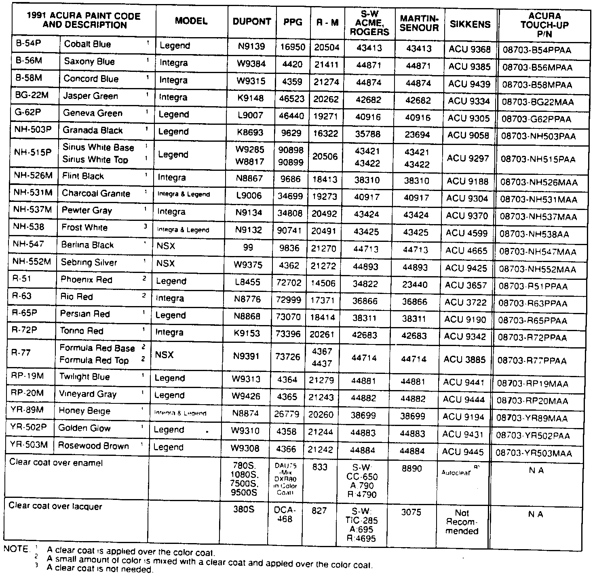

Paint Color Code Identification
January 14, 1991BULLETIN NO.
91-001
YEAR
1991
MODEL
ALL
VIN APPLICATION
ALL
1991 Acura Paint Codes

Paint formulations are determined by each paint company. For questions regarding formulas or matching, contact your local paint distributor or the paint company's nearest regional office. The information provided is for reference only. American Honda does not endorse any paint company or type of paint. East Coast Specialities, Herberts Standox and Spies Hecker use the Acura Paint Code as their paint intermix code. The original paint is acrylic enamel. Acura paint codes which include "M" or "P" are metallic colors.